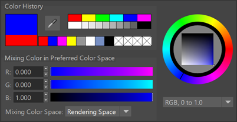

在“颜色选择器”(Color Chooser)中指定颜色数值
颜色管理已启用时，“颜色选择器”(Color Chooser)窗口和弹出菜单可用于指定不同颜色空间中的颜色数值。

- “混合颜色空间”(Mixing Color Space)设置为“渲染空间”(Rendering Space)时，会将您设置的颜色数值解释为已位于在颜色管理首选项中设置的“渲染空间”(Rendering Space)中。在首选项中设置的“视图”(View)和“显示”(Display)变换将应用于“颜色选择器”(Color Chooser)中的颜色控件以用于显示目的，但是未变换的数值将按原样存储。
- “混合颜色空间”(Mixing Color Space)设置为“显示空间”(Display Space)时，会将数值解释为位于与首选项中设置的“视图”(View)和“显示”(Display)变换相对应的颜色空间中。尤其要注意的是，使用“Viewport 2.0”或“渲染视图”(Render View)工具栏暂时更改视图时，不会更改此处使用的变换。相反的显示和视图变换将应用于数值，以便将这些值转化到渲染空间中，并存储这些渲染空间值。
- 当“混合颜色空间”(Mixing Color Space)设置为“数据”(Data)时，将存储原始数值。这类似于“渲染空间”(Rendering Space)，但视图变换不会应用于色样或其他控件。
- 如果使用的是定义 color_picking 角色的 OCIO 配置文件，则该颜色空间是唯一可用的颜色空间。
例如，如果“视图”(View)变换为 ACES 1.0 SDR-video，“显示”(Display)变换为 sRGB，而且为您提供了确切的 sRGB 值以用于特定的颜色，则可以将“混合颜色空间”(Mixing Color Space)设置为“显示空间”(Display Space) 并直接输入这些值，而无需担心如何将它们转化到渲染空间中。
在任何情况下，都始终将存储的数值解释为渲染空间中的原始值。这意味着，如果稍后在首选项中更改“渲染空间”(Rendering Space)，则可能以不同的方式解释值。
使用“滴管”(Eyedropper)检查或拾取颜色
如果在颜色管理处于启用状态时将“滴管”(Eyedropper)工具移至“Viewport 2.0”、“渲染视图”(Render View)或“UV 编辑器”(UV Editor)显示的图像上，显示的数字将反映渲染颜色空间的颜色值，即应用视图变换之前的原始颜色值。另一方面，色样显示应用视图变换后显示空间中生成的颜色。
- 在“渲染视图”(Render View)、“Viewport 2.0”或“UV 编辑器”(UV Editor)中拾取将选择渲染颜色空间的颜色值。
- 拾取屏幕上的其他任意位置将对选定的颜色值应用反向视图变换。这会导致在为显示重新应用视图变换后显示相同的颜色。请再次注意，使用的视图变换与首选项中设置的相反，而不是在视口中或在“渲染视图”(Render View)中暂时切换到的视图变换。
注： 如果要在使用随 Maya 一起安装的配置之一时从 Maya 窗口外部拾取显示颜色值以用作渲染空间值，则必须在
颜色管理首选项中将
“渲染空间”(Rendering Space)临时设置为
“场景线性 Rec.709-sRGB”(scene-linear Rec.709-sRGB)，并将
“视图”(View)设置为
“无色调映射”(Un-tone-mapped)。
提示： 若要快速使用“滴管”(Eyedropper)来仅查看颜色值，可以按 Ctrl+P 打开未与颜色属性连接的“颜色选择器”(Color Chooser)窗口。
在属性编辑器中显示颜色管理缸
可以切换，以在“属性编辑器”(Attribute Editor)中针对纯色和渐变将视图变换切换到启用状态和禁用状态。该设置存储在用户首选项中。纯色和渐变使用在颜色管理首选项中设置的“视图变换”(View Transform) - 在视口或“渲染视图”(Render View)工具栏上暂时更改视图变换不会影响“属性编辑器”(Attribute Editor)中的颜色缸。
“颜色选择器”(Color Chooser)窗口和弹出菜单始终使用视图变换，即使已在属性编辑器中禁用“颜色管理缸”(Color Managed Pots)也是如此。